Blockly
The Blockly section of DobotSCStudio allows you to quickly and conveniently program your robot using the Blockly/Scratch block-based visual programming language.

Prerequisites:
- The robot has been powered on
Procedure:
- Press the page with the plus icon to start a new project.
- Drag the blocks to the code area to start programming.
- Set the corresponding parameters of each block according to actual needs. For the description of blocks, please refer to Blockly User Manual (CR Robot).
- In the point page, you can save teaching point that can be called when writing a program.
- Save the project, naming it if saving for the first time.
- Enable the robot arm.
Blockly Commands
Motion Commands
Line Move

Description: Move from the current position to a target position in straight line mode
Parameters:
TargetPoint- Indicate target point, which is obtained from the TeachPoint page
Returns: None
Joint Move

Description: Move from the current position to a target position in point to point mode
Parameters: Indicate the joint angle of the target position, the joint angles is set by Joint data command,
Returns: None
Coordinate Move
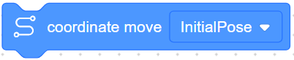Description: Move from the current position to a target position in point to point mode
Parameters:
TargetPoint- Indicate target point, which is obtained from the TeachPoint page
Returns: None
Line Offset Move
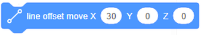Description: Move the corresponding offset in X, Y and Z directions from the current position in straight line mode
Parameters:
X- Indicate offset of X axisY- Indicate offset of Y axisZ- Indicate offset of Z axis
Returns: None
Joint Offset Move
Description: Move the joint offset in each axis from the current position in the Joint coordinate system
Parameters:
joint 1 - joint 6- Indicate angular offset of J1 - J6 axes
Returns: None
Coordinate Offset Move
Description: Move the joint offset in each axis from the current position in point to point mode
Parameters:
X- Indicate coordinate offset of the X axisY- Indicate coordinate offset of the Y axisZ- Indicate coordinate offset of the Z axis
Returns: None
Arc
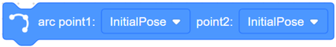Description: Move from the current position to a target position in an arc interpolated mode
Parameters:
point1- Indicate the arc’s middle point, obtained from the TeachPoint pagepoint2- Indicate the arc’s end point, obtained from the TeachPoint page
Returns: None
Circle
Description: Move from the current position to a target position in a circular interpolated mode
Parameters:
point1- Indicate the circle’s middle point, obtained from the TeachPoint pagepoint2- Indicate the circle’s end point, obtained from the TeachPoint pagecount- number of whole circles, value range: 1 - 999
Returns: None
Joint Data

Description: Set the joint angle
Parameters:
joint 1 - joint 6- Indicate joint angle of J1 - J6 axes
Returns: None
Get Current Joint Data
Description: Get the current position of the robot joints
Parameters: None
Returns: Joint angle of J1 - J6 axes
Get Current Coordinate Data
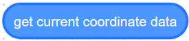Description: Get the current pose of the robot
Parameters: None
Returns: Cartesian coordinates of the current pose
I/O Commands
Set Digital Output
Description: Set the status of a digital output port
Parameters:
Control end- controller or toolDO- Digital output index. When you select controller, the value range is DO1 - DO16; when you select tool, the value range is DO1 - DO2Status- set the DO to on or off
Returns: None
Wait Digital Input

Description: If any of the following conditions are met, the program continues to execute: - The status of DI is the same as the status set by the instruction - The status of DI is different from the state set by the instruction, while the waiting time exceeds the preset time
Parameters:
Control end- controller or toolDI- digital input index. When you select controller, the value range is DI1 - DI32; when you select tool, the value range is DI1 - DI2Status- Indicate status of DITime- Set the waiting time, if the waiting time value is 0, it will wait until the condition is met
Returns:
Set Analog Output
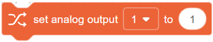Description: Set the value of analog output port
Parameters:
Port- analog output indexParameters- the value of the analog output
Returns: None
Digital Input
Description: Get the current I/O status, can be used as a conditional in certain instructions
Parameters:
Control end- controller or toolDI- digital input index. When you select controller, the value range is DI1 - DI32; when you select tool, the value range is DI1 - DI2Status- indicate status of DITime- set the waiting time, if the waiting time value is 0, it will wait forever until the condition is met
Returns: Whether the condition is True or False
Get Analog Input
Description: Get the value of analog input port
Parameters:
Control end- controller or toolDI- analog input index
Returns: value of analog input port
Modbus Commands
Get Input Register Address
Description: Read the input register value with the specified data type from the Modbus slave
Parameters:
Address- Starting address of the input registers. Value range: 0 - 4095type- Data typeEmpty- Read 16-bit unsigned integer (two bytes, occupy one register)“U16”- Read 16-bit unsigned integer (two bytes, occupy one register)“U32”- Read 32-bit unsigned integer (four bytes, occupy two registers)“F32”- Read 32-bit single-precision floating-point number (four bytes, occupy two registers)“F64”- Read 64-bit double-precision floating-point number (eight bytes, occupy four registers)
Returns: input register value
Get Holding Register Address
Description: Read the holding register value from the Modbus slave according to the specified data type
Parameters:
Address- starting address of the holding registers. Value range: 0 - 4095type- Data typeEmpty- Read 16-bit unsigned integer (two bytes, occupy one register)“U16”- Read 16-bit unsigned integer (two bytes, occupy one register)“U32”- Read 32-bit unsigned integer (four bytes, occupy two registers)“F32”- Read 32-bit single-precision floating-point number (four bytes, occupy two registers)“F64”- Read 64-bit double-precision floating-point number (eight bytes, occupy four registers)
Returns: holding register value
Get Discrete Input Register Address
Description: Read the discrete input register value from Modbus slave
Parameters:
Address- starting address of the discrete inputs register. Value range: 0-4095
Returns: discrete input register value
Get Coils Register Address
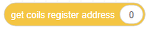Description: Read the coil register value from the Modbus slave
Parameters:
Address- starting address of the coils register.. Value range: 0-4095
Returns: coil register value
Set Coils Register Address
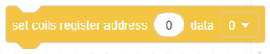Description: Set the coil register in the Modbus slave
Parameters:
Address- Starting address of the coils register. Value range: 6 - 4095Value- the value written into the coil register
Returns: None
Note
This command is not supported when the coil register address is from 0 to 5
Set Holding Register Address
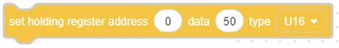Description: Set the holding register value in the Modbus slave
Parameters:
Address- Starting address of the holding registers to set. Value range: 0 - 4095type- Data typeEmpty- Read 16-bit unsigned integer (two bytes, occupy one register)“U16”- Set 16-bit unsigned integer (two bytes, occupy one register)“U32”- Set 32-bit unsigned integer (four bytes, occupy two registers)“F32”- Set 32-bit single-precision floating-point number (four bytes, occupy two registers)“F64”- Set 64-bit double-precision floating-point number (eight bytes, occupy four registers)
Returns: None
TCP Commands
Open Socket
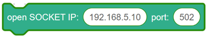Description: Create a TCP network with the robot as a client
Parameters:
IP- IP address of the serverport- port of the server
Returns: None
Get Open Socket Result
Description: Get the connection result
Parameters: None
Returns:
0- TCP connection is successful1- Input parameters are incorrect2- Socket object is not found3- Timeout setting is incorrect4- If the robot is set as a client, it indicates that the connection is wrong. If the robot is set as a server, it indicates that receiving data is wrong
Create Socket
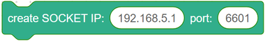Description: Create a TCP network, robot as a server
Parameters:
IP- address of the serverport- Server port
Returns:
Note
The port cannot be set to 502 and 8080. Otherwise, it will be in conflict with the Modbus default port or the port used in the conveyor tracking application, causing the creation to fail
Get Create Socket Result
Description: Get the connection result
Parameters: None
Returns:
0- TCP network created successfully1- TCP network creation failedSocket- Socket object
Socket Send Variable
Description: Send data through socket communication
Parameters: Variable: data to be sent
Returns: None
Close Socket
Description: Release a TCP network
Parameters: None
Returns: None
Get Socket Send Result
Description: Get the result of the data communication through the Socket
Parameters: None
Returns:
0- Sending data succeeded1- Sending data failed
Get Variable
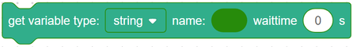Description: Obtain data through Socket communication
Parameters:
Type- string or numberName- Variable used to hold datawaiting- time: Set the waiting time, if the waiting time value is 0, it will wait forever until data is received
Returns: None
Variables Commands
Make a Variable

Description: Make a variable
Parameters:
Variable Name- Name of the variable to be created.
Returns: Defined Variable
Note
You must start with a letter, and you can’t use special characters like spaces in variable names
Set Variable
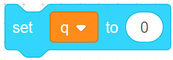Description: Set the value of a variable
Parameters:
Name- name of the variable to be setparameter- value of a variable
Returns: None
Change Variable
Description: Modify the value of a variable
Parameters:
Name- name of the variable to be changedparameter- The value of an increase or decrease
Returns: None